مختبر الأسنان الرقمي
مع التواصل في الوقت
الحقيقي
نحن نعمل على تمكين الآلاف من عيادات طب الأسنان من خلال تدفقات عمل مبتكرة لتعزيز رعاية المرضى وإحداث ثورة في طريقة فحصهم وطلبهم والتعاون في العمل المختبري.
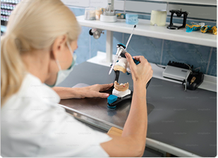
تعزيز مستقبل طب الأسنان الرقمي
لا يمكن تحقيق ترميمات متسقة وملائمة إلا من خلال التواصل القوي. في لازورد، قمنا بتطوير طرق مبتكرة للتعاون مع أطباء الأسنان لدينا باستخدام قوة التكنولوجيا لإعادة تعريف ما هو ممكن لكل مريض.
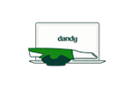
سير العمل التعاوني
احصل على مراجعات المسح في الوقت الفعلي واعتمد تصميمات الحالات ثلاثية الأبعاد للتحكم النهائي في عملك المختبري.
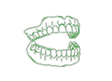
المنتجات المبتكرة
قم بتقديم خدمات تغير قواعد اللعبة مثل التيجان لمدة 5 أيام، وأطقم الأسنان ذات الموعدين، والأجزاء الجزئية المباشرة حتى النهاية.
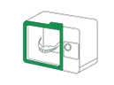
مختبر رقمي بالكامل
يمكنك الوصول إلى فنيين ذوي المستوى العالمي الذين يتمتعون بأحدث تقنيات طب الأسنان وأوقات التسليم الرائدة في الصناعة.
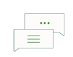
الخبرة عند الطلب
يمكنك الوصول إلى خبرائنا السريريين للحصول على إرشادات ودعم شخصيين عبر الهاتف أو الرسائل النصية أو البريد الإلكتروني أو الدردشة المباشرة خلال دقائق.
حلول طب الأسنان الترميمية لتناسب احتياجاتك
هل أنت جديد في مجال المسح الضوئي؟
تقديم نتائج متوقعة للمرضى باستخدام التكنولوجيا والأدوات المبتكرة التي تمنحك التحكم النهائي.
- الماسح الضوئي 3Shape TRIOS مجاني
- سير عمل المسح الرقمي الموجه
- تدفقات العمل الرقمية لأطقم الأسنان وأكثر من ذلك
- معاينات تصميم مجانية لإضافة اللمسات النهائيةعلى القضايا المهمة
هل تقوم بالمسح الضوئي بالفعل؟
قم بتنمية ممارستك من خلال الانتقال إلى سير العمل الرقمي باستخدام مجموعة أدوات طب الأسنان الرقمية المثبتة لدينا.
- الماسح الضوئي 3Shape TRIOS
- سير عمل المسح الرقمي الموجه
- مراجعات المسح المباشر المجانية لمزيد من الثقة
- تدريب ودعم غير محدود
أطلق العنان للابتكار الرائد في السوق مع مختبر طب الأسنان الخاص بنا
لا يمكن تحقيق ترميمات متسقة وملائمة إلا من خلال التواصل القوي. في لازورد، قمنا بتطوير طرق مبتكرة للتعاون مع أطباء الأسنان لدينا باستخدام قوة التكنولوجيا لإعادة تعريف ما هو ممكن لكل مريض.
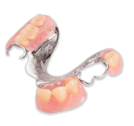
أجزاء مباشرة إلى النهاية
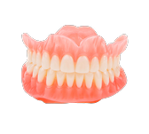
طقم الأسنان ذو الموعد الثاني
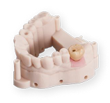
حلول زراعة الأسنان الشاملة
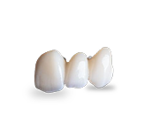
تيجان الزركونيا لمدة 5 أيام
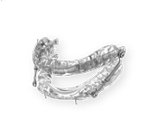
أجهزة علاج انقطاع التنفس
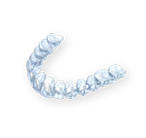
تقويم الأسنان الشفاف
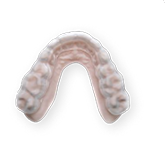
واقيات ليلية مطبوعة بتقنية ثلاثية الأبعاد
قم بتحويل ممارستك باستخدام سير عمل رقمي مثبت
استمتع بمستوى من التحكم لم يكن ممكنًا من قبل.
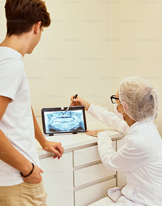
تحقيق نتائج أفضل لممارستك ومرضاك
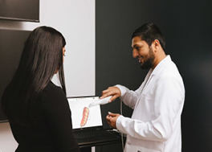
تطوير مهارات كل عضو من الموظفين
اجعل مساعديك يقومون بالمسح بثقة لكل سير عمل رقمي - استفد من التدريب غير المحدود لفريقك كلما دعت الحاجة.
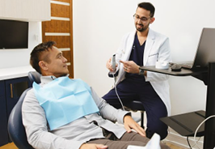
تحسين تجربة المريض
ارفع مستوى رعاية المرضى من خلال ابتكارات مثل أطقم الأسنان ذات الموعدين، والأجزاء الجزئية المباشرة إلى النهاية، والماسح الضوئي رقم 1 في طب الأسنان الترميمي.
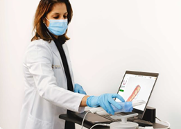
زيادة القدرة على التنبؤ بالعلاج
استخدم أدوات المسح المتقدمة. تصور التصميمات الرقمية والموافقة عليها، وتعزيز قبول الحالة، وتقديم نتائج ناجحة للمريض مع التحكم المطلق.
الآلاف من الممارسات تثق في لازورد في أعمالها المختبرية
50K+
تقييمات 5 نجوم
$30K
تم الحفظ مقدمًا
1.5M+
تم تسليم الابتسامات السعيدة
تواصل معنا
قم بتطوير ممارستك مع لازورد - الشريك الرقمي الوحيد المتكامل وقم بتحسين تجربة المريض والحلول السريرية ونمو الأعمال.
إبدأ اليوم عن طريق ملء النموذج.
من خلال تقديم النموذج أعلاه، أوافق على شروط الاستخدام وسياسة الخصوصية الخاصة بشركة لازورد وأوافق على أن يتم الاتصال بي من قبل شركة لازورد عبر رسالة نصية باستخدام معلومات الاتصال التي قدمتها. قد يتم تطبيق أسعار الرسائل والبيانات ويمكنني الرد بـ STOP لإلغاء الاشتراك في أي وقت.
تعرف على المزيد حول مستقبل طب الأسنان وكيف يشكله لازورد.
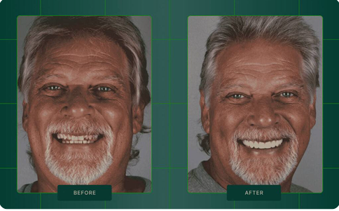
دراسة حالة: 10 وحدات لتحويل ابتسامة الزركونيا
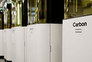
داخل معمل لازورد للمستقبل
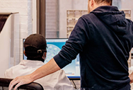